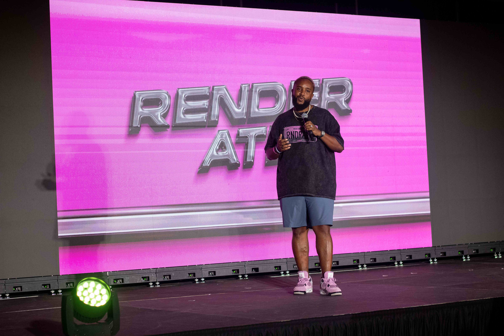
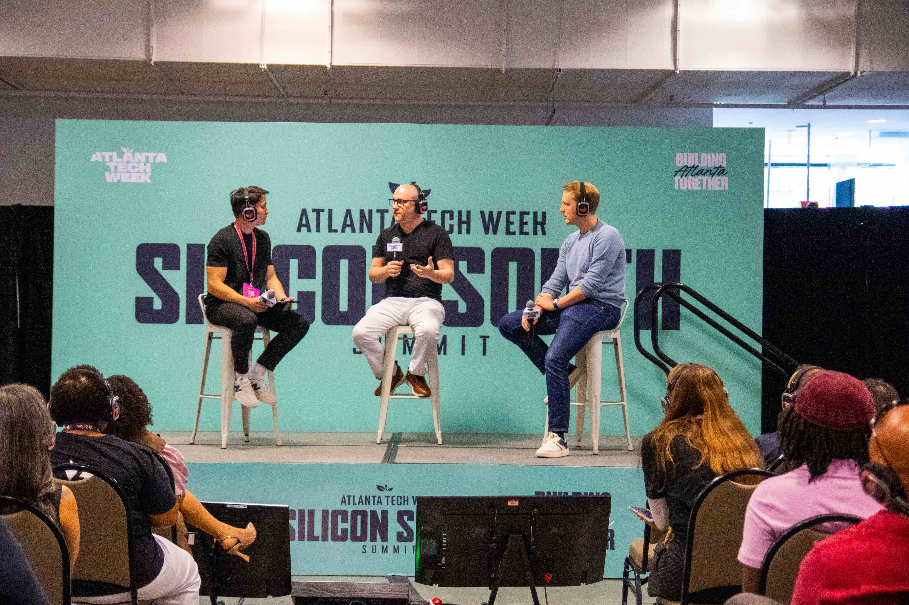
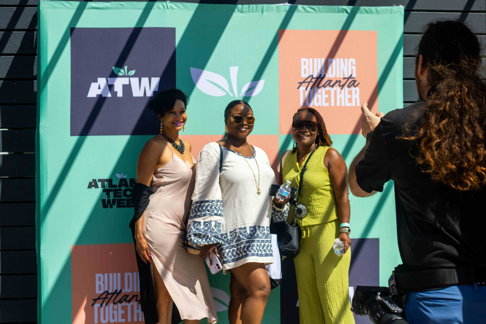
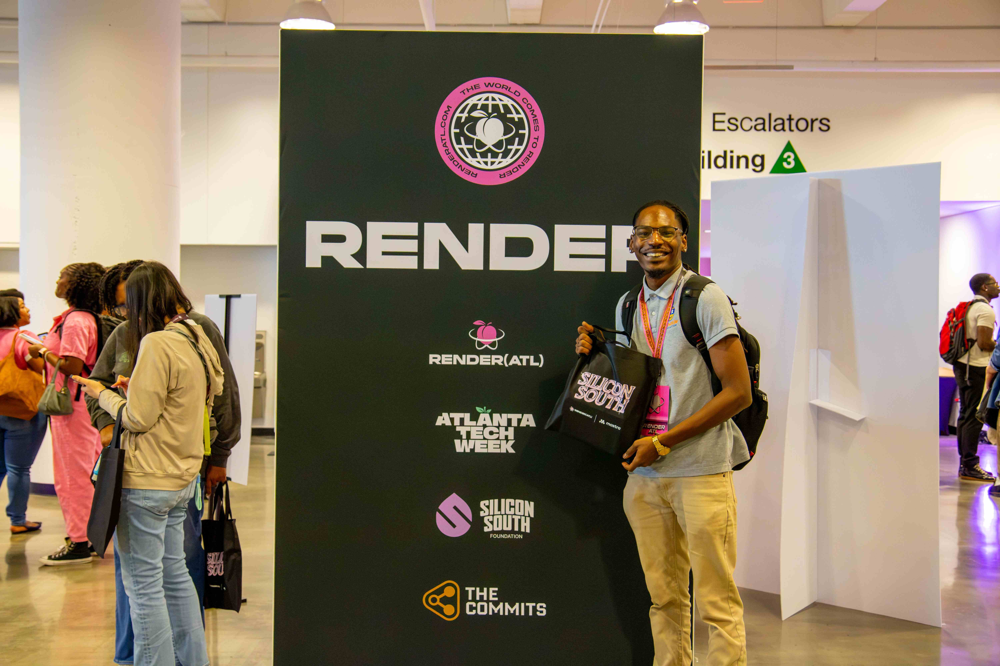

Conference Coverage
RENDERATL / ATLANTA TECH WEEK
RenderATL
Atlanta Tech Week
Event Photographer
+ Videographer
Atlanta, GA
2026
Over three weeks, I documented Hank Design Studios as they prepared
and built their installation for RenderATL and Atlanta Tech Week,
capturing the process from behind the scenes through the final
conference experience.
I followed the team throughout the build and event, capturing both
photo and video of their work, interactions, and the finished
experience. In post-production, I edited long- and short-form video
content and delivered a final gallery of 100 edited photos—creating
a full visual story of the project from prep to execution.



